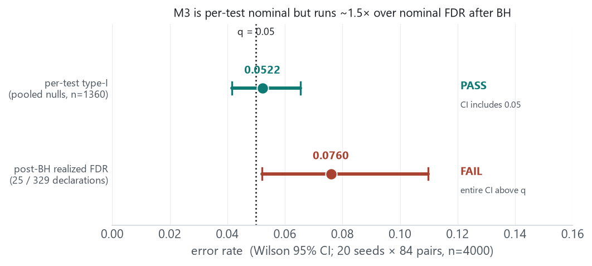
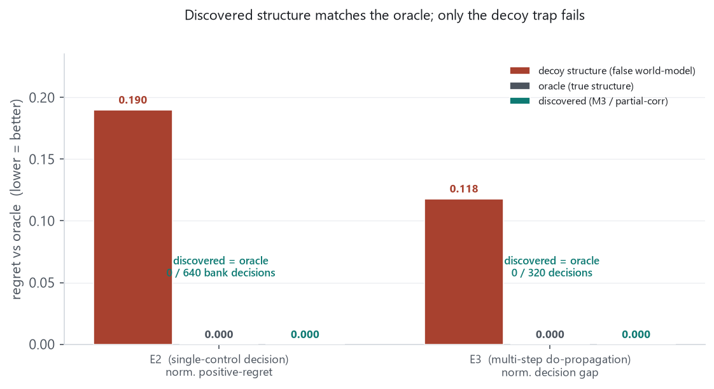
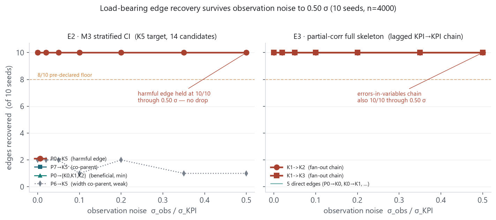

This report records the layer that closes the E2 discovered-arm loop and de-risks the two remaining structural unknowns on the road to E5. The E2 harmful shared-knob edge P0→K5 — which the original partial-correlation method dropped in 7/10 seeds — is recovered 20/20 seeds by the M3 stratified conditional-CI method. A pre-declared false-positive calibration study then finds M3 is per-test nominal but over-declares under BH (realized FDR 0.076 vs q=0.05); we show that overshoot is provably inert for E2's single-control decision (0 action mismatches vs the oracle). A structural (mechanism-restricted) multi-step world model reproduces the frozen E3 decoy gap bit-for-bit and makes the E3 discovered arm act as the oracle. Finally, a pre-declared noise sweep shows the load-bearing edges in both benchmarks survive observation noise to 0.50 σ at 10/10. Everything below is a DEV prototype or truth-free analysis; nothing frozen is changed.
reports/2026-09-06-e2-discovery-method-and-livetrap/) — the discovery-method arc,
the operating-point redesign (9d87a60, trap live at 0.19), the 3-arm thesis fire, and the
first stratified P0→K5 recovery prototype (10/10). Sits alongside the
2026-09-07 learned-arm record (reports/2026-09-07-eseries-learned-arms-and-e2-design-decision/).
The research frame — goal is E5, discovery-completeness of the harmful edge is the binding
constraint — is set in reports/2026-09-06-e5-direction-and-causal-upgrade-synthesis.md.
The M3 stratified conditional-CI method scores an edge cand→target by the
maximum over stratifiers g of the pooled within-stratum conditional
η², calibrated by a within-stratum conditional-permutation null that
re-maxes over g. We ran a truth-free calibration on the live-trap E2
(9d87a60): 20 seeds × 84 candidate–target pairs, n=4000,
at the pre-declared hyperparameters (NC=6, NB=8, min/stratum=40, B=299, BH q=0.05).
Hyperparameters were fixed before scoring; the results.json (1680 records)
was re-scored independently from raw records and matches the run summary exactly.
| Metric | Value | Wilson 95% CI | Verdict |
|---|---|---|---|
| Build: P0→K5 declared | 20 / 20 | all at perm floor 0.00333 | PASS |
| Build: NCP (param→KPI) recall | 0.950 | 304 / 320 | PASS |
| Per-test type-I (pooled nulls) | 0.0522 | [0.0416, 0.0653] | PASS |
| Post-BH realized FDR | 0.0760 | [0.0520, 0.1098] | FAIL |

Before treating the calibration miss as blocking, we tested whether it changes any decision. The E2 decision gate moves exactly one knob (P0) and M3 recovers all four P0 edges (P0→{K0,K1,K2,K5}) with zero false P0 edges. We built a restricted-structure world model — the true E2 mechanism restricted to the discovered edge set, non-included parents frozen at their committed value, false edges inert — and ran the frozen E2 decision gate on the M3-discovered structure across 20 seeds (32-item positive/negative bank each → 640 decisions).
| Arm | Mean positive-regret | Action mismatches vs oracle |
|---|---|---|
| Oracle (true structure) | 0.000000 | — |
| Discovered (M3) | 0.000000 | 0 / 640 |
| Decoy (P0→K5 omitted) | 0.190022 | reproduces frozen 0.19 (<1e-3) |
The FDR overshoot manifests as occasional false non-P0 edges, which the single-control decision never reads. It is therefore provably inert here. Caveats: this rides on (i) a single-control decision and (ii) a structural, not learned, world model — exactly the two conditions under which the deferred FDR fix would begin to bind. See Figure 3.
E5 needs signed interventional effects propagated through discovered structure over multiple hops
— the load-bearing capability that every prior synthesis converges on, and the one the one-step
rollout path does not cover on discovered edges. E3 is the first benchmark that
requires it: a depth-3 lagged cascade P0→K0→K1→{K2,K3} plus direct
edges, with a truncate_fanout decoy that zeroes K1→K2
and K1→K3. We built a multi-step mechanism-restricted world model
(e3_multistep_wm/) that chains KPIs through discovered edges with the correct one-step lag.

All results above are noiseless. Every project memory names discovery-completeness under noise as the
binding constraint to E5, so we ran a pre-declared exploratory sweep
(noise_robustness/PREDECLARE.md): observation noise σ_obs = frac ×
σ_KPI added to KPI columns only (params are exact exogenous roots), grid
frac ∈ {0, 0.02, 0.05, 0.10, 0.20, 0.35, 0.50}, 10 seeds,
n=4000, method hyperparameters held fixed (no per-noise tuning). The whole curve
is reported; no noise level was selected or tuned to. The frac=0 point is the
exact noiseless control and reproduces the prior de-risk (E2 P0→K5 10/10 at
the perm floor; E3 chain 10/10). The E2 P0→K5 recovery table was re-scored
independently from raw records.

K5 and E3 chain edges stay at 10/10 across all noise levels to 0.50 sigma">| Benchmark · edge | frac 0.00 | 0.10 | 0.20 | 0.35 | 0.50 | <8/10 at |
|---|---|---|---|---|---|---|
| E2 · P0→K5 (harmful) | 10 | 10 | 10 | 10 | 10 | never |
| E2 · P0→{K0,K1,K2} (min) | 10 | 10 | 10 | 10 | 10 | never |
| E3 · K1→K2 (chain) | 10 | 10 | 10 | 10 | 10 | never |
| E3 · K1→K3 (chain) | 10 | 10 | 10 | 10 | 10 | never |
| E2 · P6→K5 (width co-parent) | 2 | 1 | 2 | 1 | 1 | frac 0 (noise-independent) |
The pre-declared expectation — that E3's errors-in-variables chain would be more fragile than E2's clean-param predictor — did not materialize at n=4000. Both curves are flat at ceiling because both methods threshold on a signal-vs-null gap that noise shrinks but does not close in this range. Net: discovery-completeness of the load-bearing edges is not the failure mode under moderate observation noise (≤0.50 σ) in these two benchmarks.
Toward E5. The remaining frontier is composition: register E5 (shared-knob decision where complete causal fan-out rejects a locally-attractive but globally-harmful action) and run the full spine — discovered structure → multi-step signed world model → planner → decision — with noise on. Each of those pieces now exists and is de-risked in isolation; none is composed yet, and E5 registration is a user-gated freeze step. This report deliberately stops at the decision-ready boundary.
scratchpad/:
p0k5_fp_calibration/ (M3 m3_core.py, results.json, VERDICT),
p0k5_downstream/ (RestrictedE2WorldModel, downstream_results.json),
e3_multistep_wm/ (world_model.py, results.json),
noise_robustness/ (PREDECLARE.md, e2_sweep.py, e3_sweep.py,
results_e2.json, results_e3.json). Figures regenerable via
make_figs.py (reads those JSONs live). All numbers re-scored from raw records by the
orchestrator. Nothing here changes a frozen constant, mechanism, gate, or package module; nothing is
committed to the E-series pipeline. Frozen reference numbers: E2 decoy gate mean-positive 0.190022; E3 decoy
gate gap_norm 0.118015. · reports/2026-09-07-harmful-edge-derisk-and-noise-robustness/